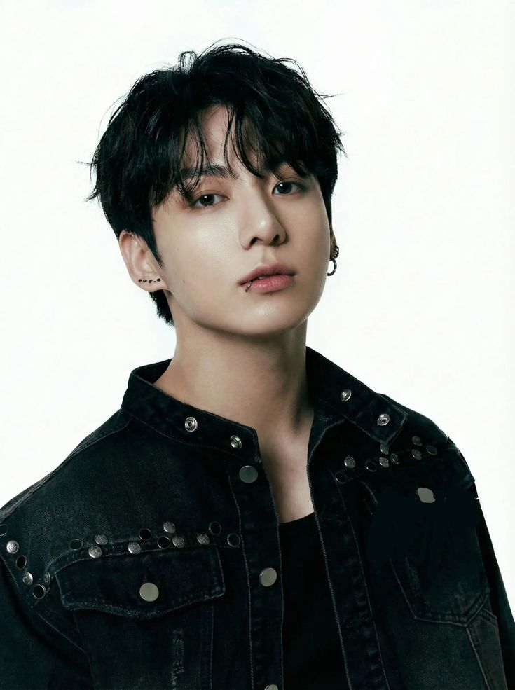

“ Todos nós temos muito a contribuir, não sabemos o que o futuro nos reserva, mas o trabalho árduo nos levará a
algum lugar. ”
–Jung Kook, 03/04/2017, Estados Unidos
Jeon Jung-kook (전정국), mais conhecido pelo monônimo Jung Kook (정국), é um cantor, compositor e produtor musical
sul-coreano da Big Hit Music . Ele é membro do grupo masculino BTS
e ocupa as posições de centro, vocalista , dançarino , visual e maknae (o mais novo).
Como artista solo, ele lançou dois singles digitais de produção própria, " Still With You " em 2020 e " My You "
em 2022. Em seguida,
fez sua estreia oficial com seu primeiro single digital, " Seven (feat. Latto) ", em 14 de julho de 2023.
